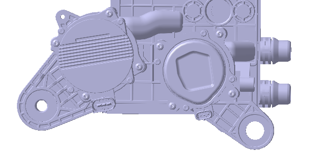
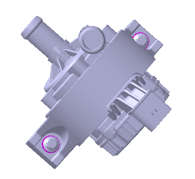

Узел водяного насоса — это Компонент, обеспечивающий циркуляцию охлаждающей жидкости для системы охлаждения; источником питания узла водяного насоса является система низковольтного питания, включение и выключение узла водяного насоса управляется контроллером кузовного домена (BDC), регулировка оборотов осуществляется с помощью сигнала PWM, а также имеется Функция диагностики.